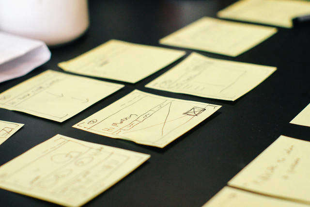

All about Living Style Guides
What is a Living Style Guide?

A living style guide is an instruction manual for designers to help them build pages for a website. Often a Living Style Guide is a template which shows all of the website or app styling. Living Style Guides list all of the components of a website in a format which makes it easy for designers and developers to pull the component from. "Living" implies that the Style Guide is evolving and changes with the code base for the project.
Why is a Living Style Guide useful to developers and designers?
Without a style guide, designers will often make small errors in their prototyping. For instance, a designer might make a button have slightly different padding on a certain page. This, spread over an entire project, will cause inconsistancies in design.
Developers will often use code snippets from style guides to code the web page. This makes sure that all of the code in the project follows certain guidelines, which will make it easier to maintain in the future. There are also a lot of other benefits to using templated code in web development.
Living Style Guide resources
Some handy Living Style Guide tips
- Use a static style guide generator to create your Style Guide
- Make your style guide include code snippets on the presented page
- Keep your style guide up to date with the latest standards
- Keep evolving your style guide when you make design decisions on your website
Some great Living Style Guide websites
- Use a static style guide generator to create your Style Guide
- Make your style guide include code snippets on the presented page
- Keep your style guide up to date with the latest standards
- Keep evolving your style guide when you make design decisions on your website